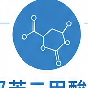
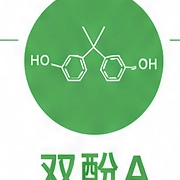

塑料包装制品
- 塑料袋、保鲜膜
- 外卖餐盒、一次性餐具
- 塑料水杯、奶瓶、储物盒
- PVC材质用品
环境荷尔蒙评估健康管理报告 | 06/10
结合本次检测结果，环境激素暴露可能来自饮水、塑料接触、个护产品与药物等多条日常路径，需要围绕真实生活暴露源做定向排查。

DEHP、DBP、BBP、DIBP、DINP、DNOP等
主要用途作为塑料增塑剂，增加柔韧性、透明度和耐用性。
特征不与聚合物化学结合，易迁移释放。

聚碳酸酯塑料、环氧树脂涂层。
主要用途用于食品容器内壁涂层、塑料制品和复合包装材料。
特征在高温、酸碱环境下更易释放。
可能影响激素合成、分泌、运输与受体结合。
长期暴露可能与生殖功能和发育节律异常相关。
在敏感期暴露时，需要额外重视神经与行为发育影响。
可能与胰岛素抵抗、脂代谢紊乱和慢性炎症背景相关。
可模拟雌激素效应，打破内分泌平衡。
部分研究提示与注意力、认知和情绪调节相关。
温馨提示：环境激素暴露具有累积性和长期性，建议从日常生活细节入手持续减少暴露。